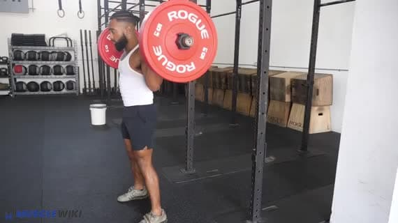

用了半年 MuscleWiki，身体地图真的改变了我的找动作习惯
从最初为了找一个深蹲标准动作偶然装上，到现在训练前习惯性打开，MuscleWiki 这半年给我的体验变化比预期大。
当初为什么装它
说出来很简单——那次想纠正深蹲姿势，在网上翻了十几篇文章，每篇配的动作演示都不一样，A 说膝盖不能超过脚尖，B 说那是误区，看得我头大。朋友甩来一个地址，说MuscleWiki官网按肌肉部位点，每个动作有真人从正面背面各拍一遍。我就顺手存了书签，后来也没特意去官方下载客户端，网页版够用。
最开始只是网页里搜深蹲，看了一遍男女示范，记着膝盖打开、核心收紧那几条，就关了。根本没打算长期用——毕竟健身 App 我手机里躺着好几个，Keep、训记、Fitstar，每个都装了又删，没一个能坚持两周。
哪点越用越顺手
第一个让我真的离不开的是那张交互式身体地图。
一开始觉得这就是个噱头——"点哪里练哪里"，听起来像儿童游戏。但用了几次才发现，它解决的是一个很实际的痛点：我根本不知道某块肌肉对应哪些动作。比如那天想练后束，在训记里搜"后束"出来一堆动作，但我不知道哪个更适合我当前的力量水平。MuscleWiki 里点一下肩膀后束那个区域，出来的动作列表按难度排序，每个动作还有目标肌群标注——主练肌和协同肌分得清清楚楚。我才第一次搞明白，原来哑铃侧平举主练前束，俯身飞鸟才是后束的主力动作。后来去MuscleWiki文档翻了一下，确认它的动作页面里都有这样的目标肌群标注。
切换男女示范也是后来才发现的好用功能。刚开始看的都是男性示范，觉得负重参考挺实在。有次练臀推，男性示范用的重量我根本上不去，切了女性示范，看到她用空杆也能把动作做得很标准——不是说要学女生的重量，而是让我意识到：标准姿势和你举多重没关系。那一刻对动作矫正的观念真的变了。
哪点越用越烦
说个反直觉的——真人实拍这件事，本来是 MuscleWiki 的卖点，用久了反倒让我有点难受。
官方一直强调"没有动画视频、没有 AI 垃圾"，每个动作都是专业人员实拍。说实话质量确实高，多角度循环播放，动作细节看得一清二楚。但问题是，真人拍的也有拍得不那么完美的时候。有个哑铃划船的示范，男性模特放下去那一下腰明显塌了一点，女性模特的动作倒是标准。我一开始没在意，后来跟着男性示范做了几次，腰就开始酸——赶紧切回女性示范对比，才发现自己跟着学了个错误的下放姿势。
不是说 MuscleWiki 拍得不好，而是它"只有真人"这个前提，让我默认所有示范都一定完美。实际上它自己也没说过每个示范都是教科书级别的。这件事之后我养成了一个习惯：看动作至少切两次示范，对比着看，找自己觉得更顺眼、也更符合身体感受的那个。
另一个烦的点是账号。MuscleWiki 不强制注册——这点我很喜欢，打开网页直接用，不用填邮箱设密码。但用了两个月想把收藏的动作跨设备同步（手机上收藏的，想在电脑排课时用），才发现不登录数据只存在本地浏览器里。注册倒是很快，Google 一键登录，没要任何额外信息。但我至今没买 Premium，免费版的三个计划、三个例程、三条训练追踪记录——胸腿背三分化刚好够用，而且我本来也不太用 AI 生成训练计划那个功能。
哪个功能成了每天离不开的
1RM 估算器。
真的，这个小小的计算器是我打开 MuscleWiki 频率最高的功能——比身体地图还高。说出来没人信，但每次练完大重量，我都会打开它输一下重量和次数，看看自己的单次极限估算值。不是为了真去冲极限，而是用来按百分比安排下一周的训练重量。比如深蹲上周练到 120kg 做 5 次，估算器告诉我 1RM 大概 140kg，那这周就可以试试 130kg 做 3 次，或者 115kg 做 8 次。
这个功能免费就能用，不登录也能算，界面干净到没有任何多余的按钮。对比之下，宏量营养计算器我只用过两次就没再碰——它算得没错，但我早就不用这种方式控制饮食了，健身初期算热量有用，后来发现凭经验吃其实更靠谱。
哪个碰都没再碰
AI 训练计划生成器。
不是说它不好——我试用过一次，输入了"增肌、哑铃、中级"，三十秒就出来一份四天的周计划，分组和次数安排得挺科学。但我排课的习惯已经固定了：自己点身体地图选动作，按"推-拉-腿-核心"分四天，组数次数凭感觉调。AI 给的计划总得自己再改一遍，改完之后感觉跟自己排的差不多，还不如一开始就自己排。
可能对刚开始健身的新手有用——完全不知道怎么安排训练的时候，AI 给个起点挺好的。但我已经过了那个阶段，这个功能在 MuscleWiki 里对我来说就是个摆设。
观感修正：当初的判断变了什么
最大的修正大概是对"健身工具"这件事的看法。
一开始我把 MuscleWiki 当成又一个会被我用两周就卸载的 App。但半年过去了，手机里训记删了、Fitstar 删了、Keep 也很少打开，唯独 MuscleWiki 还在。不是因为它功能最全——论动作库的数量，训记可能更多；论社区和分享，Keep 做得比它热闹。但 MuscleWiki 有个东西是那些 App 没有的：它不试图让我成为它的用户。
不强制注册，不弹窗让我加会员，首页就是那张身体地图——想找哪个部位点哪个，不需要先看三分钟的欢迎引导，不需要填任何个人信息。查完动作直接关，想收藏就点一下星标，不收藏也没人催你。这种"你需要的时候我在，你不需要的时候我不打扰"的气质，反而让我愿意一次次回来。
还有当初我以为"没有动画视频"是 MuscleWiki 的劣势——动画可以把肌肉发力方向画得很清楚，真人拍不到肌肉内部。但用久了发现，真人示范的价值在于它真实。你看到的就是一个人实际能做到的动作，没有被美化、没有被快进、没有被后期修正。练的时候对照着看，更容易知道自己和标准的差距在哪里。
去留结论
目前不会卸载。
它现在的状态刚好——我需要的功能都有，不需要的功能不烦我。如果哪天它开始弹窗让我买 Premium、或者身体地图加了一堆广告、或者动作库质量下降了，那是该考虑换掉的时候。但以目前的节奏看，再用半年应该问题不大。
说实话，MuscleWiki 不是那种会让我"哇"一声的软件。它就是一个安安静静待在书签栏里的工具——练前点开找动作，练完输一下重量算 1RM，偶尔想纠正姿势了就去切几遍男女示范对比。日子久了，我甚至忘了当初是为什么装的，只知道需要的时候它就在那里。这大概就是一个工具软件最理想的状态吧。如果哪天官网挂了想备份一份完整的资料，我在GitHub、Gitee 和 GitCode 上都同步了 MuscleWiki 相关的中文文档，镜像备了三不怕丢。
